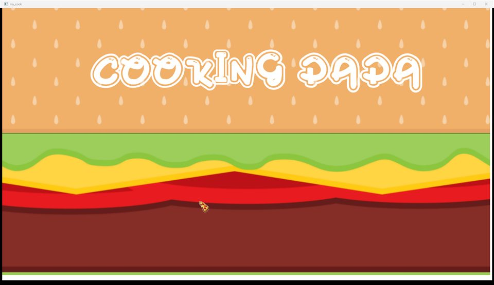
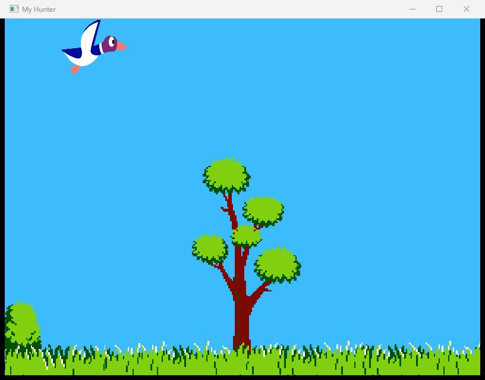
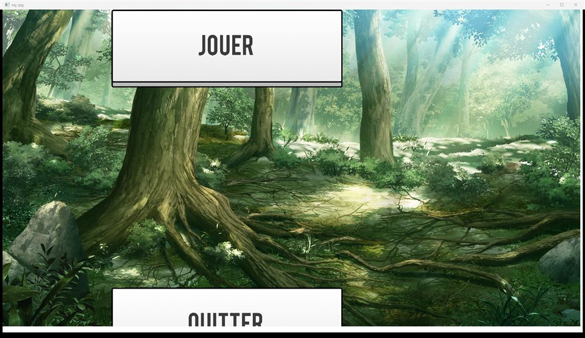
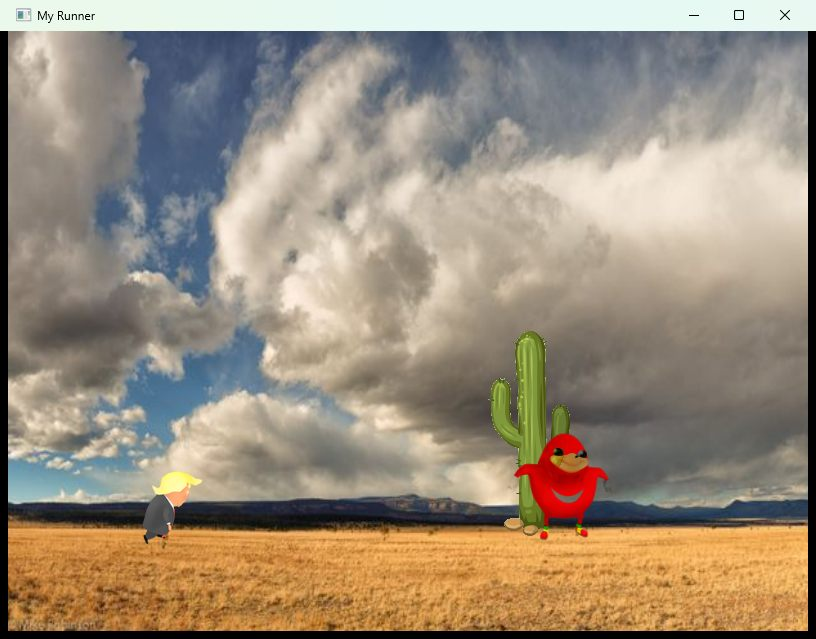
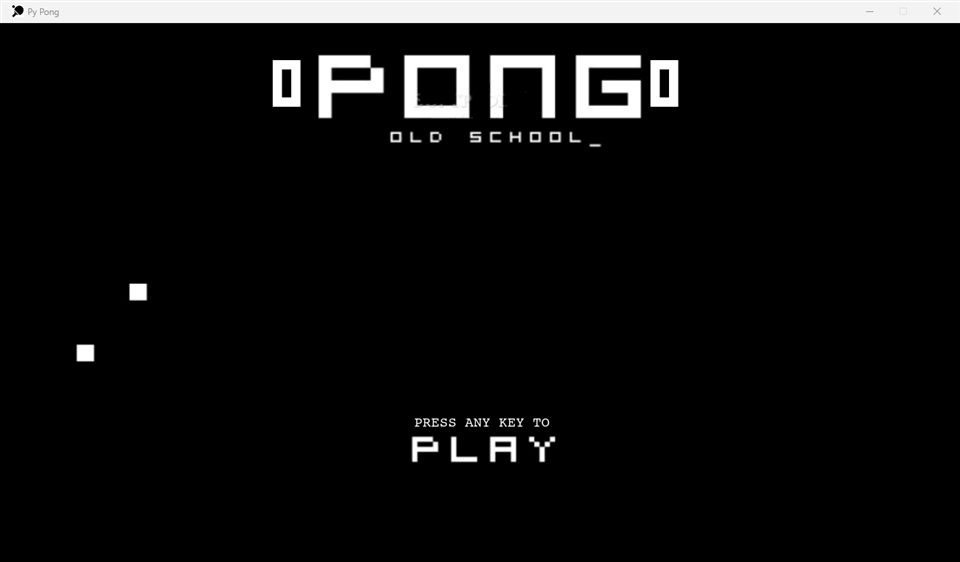
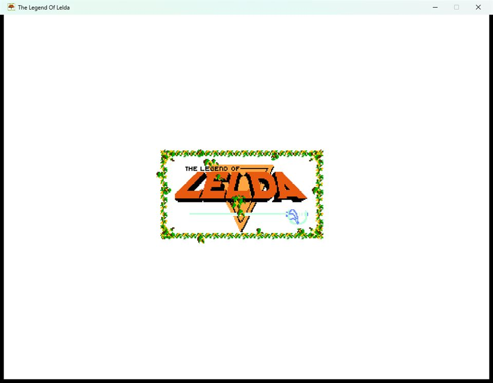
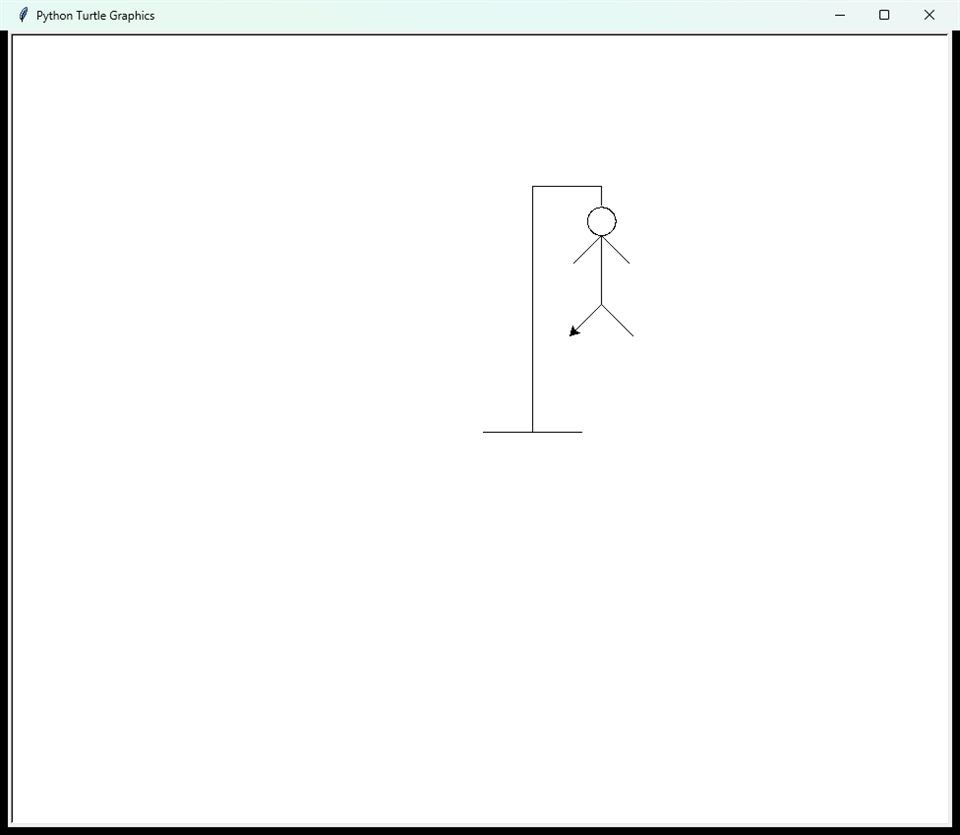

Archive
Old school projects
~30 coursework exercises from EPITECH's early years (2016–2019) — the foundational, no-shortcuts C/Assembly/Python training before any of the projects above existed. Screenshots and terminal transcripts below are real captures from actually running each one on this machine, not mockups.

my_cook
C · CSFMLMouse-driven arcade cooking game — assemble a burger matching a randomized recipe before time runs out.

my_hunter
C · CSFMLWhack-a-mole style game, clicking a bouncing duck sprite before too many misses.

my_rpg
C · CSFMLTop-down Pokémon-style RPG with map scrolling, NPC encounters, and turn-based combat.
The committed .exe still boots to this menu, but five source files it depends on (main.c, combat logic...) were never checked into this repo's git history at all — only their stale .o files were, so gameplay past "Jouer" can't be rebuilt from what's here.

my_runner
C · CSFMLEndless-runner game jumping over scrolling obstacles with an escalating score.

PongPy
Python · pygameLocal two-player Pong clone, first to 5 points.
ProcessingSnake
ProcessingOne Piece/Luffy-themed Snake game with a menu and difficulty levels.
Needs the Processing IDE (not installed here) and its media assets were never committed — even installed, the sketch would load blank images and sounds. No visual to show.

TheLegendOfLelda
Python · pygameZelda-inspired top-down adventure with a multi-area overworld, dungeons, and NPC dialogue.
hangman
CClassic word-guessing hangman game, reading a dictionary file and revealing letters.
Your letter: r: is not in this word *i*o**t**no****an**e* Tries: 9 Your letter: *i*o**t**no*s**an**es Tries: 9 Your letter: *i*ou*tu*nous*man*ues Tries: 9 Your letter: c: is not in this word *i*ou*tu*nous*man*ues Tries: 8 Your letter: f: is not in this word *i*ou*tu*nous*man*ues Tries: 5 Your letter: y: is not in this word *i*ou*tu*nous*man*ues Tries: 4

Py_pendu
Python · turtleFrench hangman — a turtle-graphics drawing version plus a console-only version.
ASM_minilibc
x86-64 Assembly · CReimplements core libc string/memory functions (strlen, memcpy, strcmp...) as an LD_PRELOAD-able shared library.
NASM source targets the Linux ELF ABI and SysV calling convention, tested via LD_PRELOAD — a Linux dynamic-linker feature with no Windows equivalent. Needs WSL or a real Linux box to run.
CPool_2017
C · ShellTwo-week Epitech C bootcamp — daily exercises in shell scripting, pointers, recursion, and linked lists, plus a capstone expression-evaluator calculator.
$ ./my_print_params hello from CPool Day07 hello from CPool Day07 $ ./evalexpr "..." j = 1 i = 18 10
my_printf_2017
CA from-scratch printf reimplementation as a static library, supporting most standard conversion specifiers.
string: hello | char: P | percent: % int: 42 | negative: 42 unsigned: 4000000000 | octal: 35632624000 | hex: ee6b2800 | HEX: EE6B2800 binary: 1010 | pointer: 0xa
pushswap
CThe classic Epitech push_swap stack-sorting algorithm challenge, selection-sort based.
$ ./push_swap "3" "8" "1" "6" pb pb pb rb rb pa pa pa
SHL_shell
BashA flat-file JSON "database" CLI (create/insert/select), built entirely from sed/grep/cut text manipulation.
lastname | firstname ------------------------ SIMPSON | Lisa SIMPSON | Lisa SIMPSON | Robert SIMPSON | RobertJohn SIMPSON | RobertJohn SMITH | Laura SMITH | Laura SMITH | Lisa SMITH | Lisa SMITH | Lisa WILLIAMS | John WILLIAMS | John
verifpwd
PythonInteractive CLI that validates password strength rules and confirms it via retyping.
Bienvenue dans l'interface de verification de mot de passe ! Veuillez inserer votre mot de passe : Veuillez confirmer votre mot de passe : Les deux passwords sont identiques. Le mot de passe a pu être vérifié.
102Architect
PythonCLI tool that builds a 2D affine transformation matrix (translate/scale/rotate/reflect) and applies it to a point.
Translation by the vector (1, 2) 1.00 0.00 1.00 0.00 1.00 2.00 0.00 0.00 1.00 (3,4) => (4.00,6.00)
104Intersection
PythonComputes where a 3D line intersects a sphere, cylinder, or cone.
sphere of radius 1 straight line going through the (0,0,0) point and of direction vector (1,0,0) 2 intersection points : (-1.000, 0.000, 0.000) (1.000, 0.000, 0.000)
108Trigo
PythonEvaluates exp/cos/sin/cosh/sinh of a square matrix via truncated Maclaurin series.
2.72 0.00 0.00 2.72
109titration
PythonParses acid-base titration CSV data and locates the equivalence point via numerical differentiation.
Derivative: volume: 7 ml -> 1.25 volume: 8 ml -> 2.15 volume: 9 ml -> 2.20 volume: 10 ml -> 1.20 volume: 11 ml -> 0.50 Equivalent point at 9 ml Second derivative estimated: volume: 8.4 ml -> 0.09 volume: 8.5 ml -> 0.00 volume: 8.6 ml -> -0.09 Equivalent point at 8.5 ml
110borwein
PythonNumerically approximates a Borwein-style sinc-product integral using three integration methods.
Rectangles: I1 = 1.8207963383 diff = 0.2500000115 Trapezoids: I1 = 1.5707963087 diff = -0.0000000181 Simpson: I1 = 1.5707963083 diff = -0.0000000185
201yams
PythonCalculates the probability of completing a target Yahtzee ("Yams") combination given partial dice rolls.
chances to get a 4 yams: 0.01%
202unsold
PythonComputes the joint probability law and expected value/variance for two random sale-price variables.
------------------------------------------------------------ X=10 X=20 X=30 X=40 X=50 Y law Y=10 0.100 0.080 0.060 0.040 0.020 0.300 Y=20 0.083 0.067 0.050 0.033 0.017 0.250 ------------------------------------------------------------ expected value of X: 23.3 variance of X: 155.6 expected value of Y: 25.0 variance of Y: 175.0 expected value of Z: 48.3 variance of Z: 330.6
203hotline
PythonModels call-center load with binomial/Poisson distributions to estimate simultaneous-call overload risk.
Binomial distribution: 18 -> 0.065 19 -> 0.075 20 -> 0.082 21 -> 0.085 22 -> 0.085 23 -> 0.081 overload: 21.4% computation time: 48.36 ms Poisson distribution: 18 -> 0.065 19 -> 0.075 20 -> 0.082 21 -> 0.085 22 -> 0.085 23 -> 0.081 overload: 21.5% computation time: 0.00 ms
204ducks
PythonSimulates a probability distribution for how long rubber ducks take to drift back to shore.
Average return time: 1m 21s Standard deviation: 1.074 Time after which 50% of the ducks are back: 1m 04s Time after which 99% of the ducks are back: 5m 04s Percentage of ducks back after 1 minute: 46.9% Percentage of ducks back after 2 minutes: 79.1%
205IQ
PythonComputes and plots a Gaussian IQ distribution and population percentages between IQ bounds.
7.9% of people have an IQ between 90 and 95
206neutrinos
PythonIncrementally updates running mean/std-dev/RMS/harmonic-mean statistics from a stream of values.
Enter next value: Number of values: 12001 Standard deviation: 4362.84 Arithmetic mean: 297514.13 Root mean square: 297546.11 Harmonic mean: 297912.09 Enter next value: Number of values: 12002 Standard deviation: 4362.89 Arithmetic mean: 297514.54 Root mean square: 297546.52 Harmonic mean: 297912.46
207demography
PythonFits linear regressions to World Bank population-by-country time series and projects to 2050.
Country: European Union Fit1 Y = 1.62 X - 2749.67 Root-mean-square deviation: 472.04 Population in 2050: 570.85 Fit2 X = 0.60 Y + 1707.97 Population in 2050: 574.54 Correlation: 0.0000
208dowels
PythonChi-squared goodness-of-fit exercise for manufactured dowel size classes.
x | 1 | 2 | 3 | 4 | 5 | 6 | Total Ox | 1 | 2 | 3 | 4 | 5 | 6 | 100 Tx | 1.0 | 2.0 | 3.0 | 4.0 | 5.0 | 6.0 | 100.0 Distribution: B(100, 1.0000) Chi-squared: 1.000 Degrees of freedom: 1 Fit validity: 1
209poll
PythonComputes sampling variance and 95%/99% confidence intervals for an election poll.
Population size: 10000 Sample size: 500 Voting intentions: 42.24% Variance: 0.000464 95% confidence interval: [38.02%; 46.46%] 99% confidence interval: [36.68%; 47.80%]
CNA_groundhog
PythonStreams temperature readings and computes moving-average/rate-of-change/Bollinger-band trend-reversal indicators.
g=0.57 r=8% s=1.29 a switch occurs g=0.61 r=17% s=1.61 g=0.67 r=20% s=1.71 g=1.01 r=31% s=2.02 g=0.89 r=25% s=1.98 Global tendency switched 5 times 5 weirdest values are [26.7, 24.0, 21.6, 36.5, 42.1]